리눅스마스터-2급 (2018-06-09 기출문제)
1과목: 리눅스 운영 및 관리
1. 다음 명령의 결과로 설정되는 lin.txt 파일의 허가권으로 알맞은 것은?
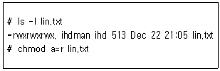
- --wx-wx-wx
- -r--------
- -r--r--r--
- ------r--
(정답률: 89%)

2. 다음은 삼바로 공유된 디렉터리를 공유하는 과정이다. ( 괄호 ) 안에 들어갈 내용으로 알맞은 것은?
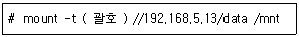
- smb
- smbfs
- samba
- nfs
(정답률: 50%)
3. 다음 명령의 결과로 출력되는 ( 괄호 ) 안의 값으로 알맞은 것은?(오류 신고가 접수된 문제입니다. 반드시 정답과 해설을 확인하시기 바랍니다.)
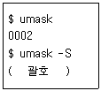
- u=, g=, o=w
- u=rx, g=rx, o=r
- u=rw, g=rw, o=r
- u=rwx, g=rwx, o=rx
(정답률: 78%)
4. 다음 중 Set-UID에 대한 설정하는 방법으로 알맞은 것은?
- chmod s+u a.out
- chmod s+g a.out
- chmod u+s a.out
- chmod u+g a.out
(정답률: 80%)
5. 다음 명령과 같이 umask 값을 지정했을 경우에 파일 생성 시 부여되는 허가권 값으로 알맞은 것은?
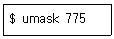
- --------w-
- --------wx
- -rw-rw-r--
- -rwxrwxr-x
(정답률: 58%)
6. 다음 중 fdisk 명령 실행 시에 파티션의 속성을 변경하는 명령으로 알맞은 것은?
- c
- m
- n
- t
(정답률: 73%)
7. 다음 중 파티션에 사용가능한 아이노드(I-node)의 수를 확인하는 명령으로 알맞은 것은?
- df -i
- du
- fsck
- mount
(정답률: 79%)
8. 다음 중 공유 디렉터리(world-writable directory) 설정이라고 부르는 스티키 비트(Sticky Bit)가 부여된 디렉터리로 알맞은 것은?
- /bin
- /usr
- /etc
- /tmp
(정답률: 71%)
9. 다음 중 ihduser라는 사용자에 사용자 쿼터를 설정하는 명령으로 알맞은 것은?
- quota ihduser
- quotaon ihduser
- edquota ihduser
- quotacheck ihduser
(정답률: 74%)
10. 다음 중 fsck 명령 실행 시에 발생한 오류 파일들이 위치하는 디렉터리로 알맞은 것은?
- /sys
- /tmp
- /cgroup
- /lost+found
(정답률: 76%)
11. 다음 중 스크립트 내용에 대한 설명으로 틀린 것은?
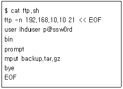
- 자동으로 파일을 전송하는 스크립트이다.
- backup.tar.gz 파일을 다운로드 한다.
- 바이너리 전송모드를 사용한다.
- 서버의 서비스 포트는 21번이다.
(정답률: 68%)
12. 다음 중 ( 괄호 ) 안에 들어갈 명령어로 알맞은 것은?
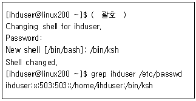
- chsh -s /bin/ksh
- usermod -s /bin/ksh ihduser
- chsh
- useradd -s /bin/ksh ihduser
(정답률: 55%)
13. 다음 중 ( 괄호 ) 안에 들어갈 명령어 출력 내용으로 알맞은 것은?
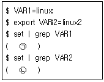
- ㉠ 출력 내용 없음 ㉡ 출력 내용 없음
- ㉠ VAR1=linux ㉡ 출력 내용 없음
- ㉠ 출력 내용 없음 ㉡ VAR2=linux2
- ㉠ VAR1=linux ㉡ VAR2=linux2
(정답률: 51%)
14. 다음 중 명령어 출력 결과와 상관있는 변수로 알맞은 것은?
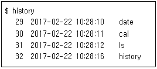
- HISTTIMEFORMAT
- HISTFILE
- DISPLAY
- HISTCHK
(정답률: 55%)
15. 다음 중 명령어에 대한 설명으로 알맞은 것은?
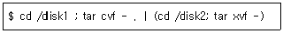
- /disk1 내용을 /disk2로 옮긴다.
- /disk2 내용을 /disk1로 옮긴다.
- /disk1 내용만 백업 받는다.
- /disk2 내용만 백업 받는다.
(정답률: 69%)
16. 다음 중 사용자의 로그인 셸을 확인하는 명령어로 틀린 것은?
- SHELL 변수의 내용을 확인한다.
- /etc/group 파일의 내용을 확인한다.
- /etc/passwd 파일의 내용을 확인한다.
- finger 명령어의 -l 옵션을 사용한다.
(정답률: 57%)
17. 다음 중 설명으로 알맞은 것은?
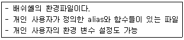
- /etc/profile
- /etc/bashrc
- $HOME/.bash_logout
- $HOME/.bashrc
(정답률: 54%)
18. 다음 중 ( 괄호 ) 안에 들어갈 명령어 구문으로 알맞은 것은?
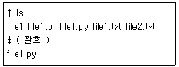
- ls file1*
- ls file?
- ls file[12].py
- ls file[!1].py
(정답률: 55%)
19. 다음 중 웹서버 데몬을 구동하는 방법이 아닌 것은?
- service httpd start
- /etc/rc.d/httpd start
- /etc/init.d/httpd restart
- /etc/rc.d/init.d/httpd restart
(정답률: 45%)
20. 다음 명령의 결과에 대한 설명으로 틀린 것은?
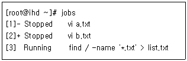
- 백그라운드 작업 상태는 jobs 명령으로 확인할 수 있다.
- 작업번호 없이 fg명령을 수행하면 vi a.txt가 포어그라운드로 전환된다.
- 'fg %2' 명령으로 vi b.txt를 포어그라운드 프로세스로 전환할 수 있다.
- 보통 사용자가 가장 늦게 실행한 프로세스에 + 기호가 붙는다.
(정답률: 52%)
21. 다음 중 현재 실행중인 vi 명령의 프로세스를 강제로 종료하고자 할 때 사용하는 명령으로 알맞은 것은?
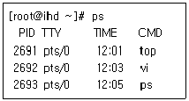
- kill -HUP 2691
- kill -HUP 2692
- kill -9 2691
- kill -9 2692
(정답률: 82%)
22. 다음 중매주 월요일 오전 4시정각에 /etc/check.sh 라는 스크립트를 실행하는 crontab 설정으로 알맞은 것은?
- * 1 1 4 0 /etc/check.sh
- 0 4 * * 1 /etc/check.sh
- * * 1 0 4 ./etc/check.sh
- 1 * * 4 0 ./etc/check.sh
(정답률: 83%)
23. 다음 중 root 사용자가 ihd 사용자의 crontab 내용을 작성하거나 수정하고자 할 때 사용하는 명령으로 알맞은 것은?
- crontab -e ihd
- crontab -e -u ihd
- crontab -w ihd
- crontab -w -u ihd
(정답률: 66%)
24. 시그널에 관련된 설명으로 틀린 것은?
- SIGKILL은 프로세스를 강제로 종료시키는 시그널이다.
- SIGINT는 키보드로부터 오는 인터럽트 시그널로 실행을 중지시킨다.
- 시그널의 전체 목록은 명령행에서 'kill -a'명령으로 확인할 수 있다.
- 특정 프로세스가 다른 프로세스에게 메시지를 보낼 때 시그널을 이용한다.
(정답률: 68%)
25. 다음 중 [Ctrl] + [z] 입력 시 전송되는 시그널로 알맞은 것은?
- SIGINT
- SIGQUIT
- SIGSTOP
- SIGTSTP
(정답률: 65%)
26. 다음 설명에 알맞은 명령어는?
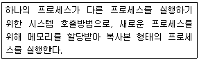
- pstree
- fork
- exec
- ps
(정답률: 76%)
27. 다음 중 프로세스에 관련된 설명으로 알맞은 것은?
- 최초의 프로세스는 init로 PID는 0이다.
- 시스템 운영에 필요한 프로세스는 fork방식으로 생성된다.
- 프로세스 호출은 fork와 inetd 방식이 있다.
- inetd 방식으로 호출된 프로세스는 작업 종료 유무에 상관없이 항상 메모리에 상주한다.
(정답률: 58%)
28. 다음 중 스케줄링에 관련된 명령어로 알맞게 짝지은 것은?
- jobs, crontab
- jobs, command
- at, crontab
- at, command
(정답률: 66%)
29. 다음 중 vi 편집기의 문자열 치환과 같은 패턴으로 셸 환경에서 치환 가능한 명령어로 알맞은 것은?
- cat
- awk
- sed
- printf
(정답률: 45%)
30. vi 편집기로 다음과 같은 작업을 수행하려고 한다. vi편집기에서 사용될 수 있는 단축키 조합으로 알맞은 것은?
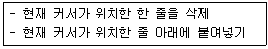
- yy, p
- dd, p
- db, o
- dl, o
(정답률: 82%)
31. 다음과 같은 명령의 수행 결과 가장 알맞은 것은?
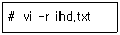
- ihd.txt 파일을 삭제한다.
- .ihd.txt.swp 파일의 내용을 불러온다.
- ihd.txt 파일의 스왑(swap)파일 목록을 출력한다.
- ihd.txt 파일이 존재하지 않으면 새로 만들고 vi가 실행된다.
(정답률: 50%)
32. 다음 중 emacs 편집기에서 커서가 위치한 부분부터 줄 전체를 삭제하는 단축키로 알맞은 것은?
- [Ctrl] + [x]
- [Ctrl] + [k]
- [Ctrl] + [d]
- [Alt] + [d]
(정답률: 42%)
33. 다음 중 리눅스에서 사용하는 에디터로 틀린 것은?
- notepad
- vim
- emacs
- pico
(정답률: 81%)
34. 다음 중 리눅스에서 사용되는 GUI기반의 에디터로 알맞은 것은?
- gVim
- PICO
- emacs
- vim
(정답률: 73%)
35. 다음 중 cmake 기반의 프로그램 설치 순서로 가장 알맞은 것은?
- configure → cmake → make install
- configure → make → cmake
- make → cmake → make install
- cmake → make install
(정답률: 49%)
36. 다음 중 cmake 기반의 소스 설치를 수행하는 프로그램으로 알맞은 것은?
- Apache HTTP
- PHP
- MySQL
- SAMBA
(정답률: 68%)
37. 다음 중 데비안 계열 리눅스에서 사용하는 패키지 관리 프로그램으로 가장 거리가 먼 것은?
- alien
- apt-get
- dselect
- yum
(정답률: 65%)
38. 다음은 관련 패키지를 삭제하는 과정이다. ( 괄호 ) 안에 들어갈 내용으로 알맞은 것은?
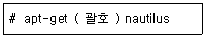
- delete
- erase
- remove
- uninstall
(정답률: 67%)
39. yum 명령의 결과가 다음 그림과 같을 때 ( 괄호 ) 안에 들어갈 내용으로 알맞은 것은?
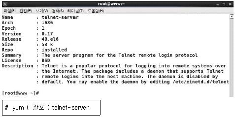
- -i
- -qi
- info
- search
(정답률: 55%)
40. 다음 조건에 해당하는 명령으로 알맞은 것은?
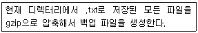
- tar zcvf linux.tar.gz *.txt
- tar jcvf linux.tar.bz2 *.txt
- tar zxvf linux.tar.gz *.txt
- tar jxvf linux.tar.bz2 *.txt
(정답률: 62%)
41. 다음 조건과 같을 때 ( 괄호 ) 안에 들어갈 내용으로 알맞은 것은?
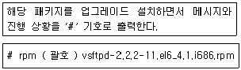
- -ivh
- -uvh
- -Uvh
- -Fvh
(정답률: 58%)
42. 다음은 yum 명령을 이용해서 패키지를 설치하는 과정이다. ( 괄호 ) 안에 들어갈 내용으로 알맞은 것은?
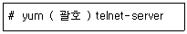
- -i
- -u
- -U
- install
(정답률: 74%)
43. 다음 중 프린터 설정에 관한 내용으로 틀린 것은?
- system-config-printer 명령으로 손쉽게 설정할 수 있다.
- CUPS를 사용하는 경우 로컬 연결한 프린터를 네트워크 프린터처럼 설정 가능하다.
- 리눅스 시스템에 프린터를 직접 연결하는 경우 자동으로 관련 파일이 생성된다.
- USB포트에 연결하면 /dev/lp0으로 사용 가능하다.
(정답률: 56%)
44. 다음 중 시스템에 설치된 장치 목록을 출력해주는 명령으로 알맞은 것은?
- vmstat
- netstat
- top
- lspci
(정답률: 66%)
45. 다음 중 프린터 큐의 작업 목록을 출력하는 명령으로 알맞은 것은?
- lpq
- lpm
- lpr
- lp
(정답률: 73%)
46. 다음 중 ihd.txt 파일을 프린터로 인쇄하기 위한 명령으로 틀린 것은?
- lpr -r ihd.txt
- cat ihd.txt | lpr
- cat ihd.txt ＞ /dev/null
- cat ihd.txt ＞ /dev/lp0
(정답률: 67%)
47. 다음 중 ALSA에 관한 내용으로 틀린 것은?
- 사운드 카드를 자동으로 구성하게 한다.
- 다수의 사운드 장치를 관리하는 것을 목적으로 한다.
- 표준 유닉스 장치 시스템 콜에 기반을 두고 있다.
- 사운드 카드용 장치 드라이버를 제공하기 위한 리눅스 커널의 요소다.
(정답률: 57%)
48. 다음 내용으로 알맞은 것은?
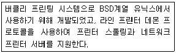
- LPRng
- BPRng
- CUPS
- ALSA
(정답률: 73%)
2과목: 리눅스 활용
49. 다음 중 X 서버에서 보내온 키 값을 설치하는 명령으로 알맞은 것은?
- xauth add $DISPLAY . ed41d4ee4d147d67d26
- xauth add $DISPLAY ed41d4ee4d147d67d26
- xauth add DISPLAY . ed41d4ee4d147d67d26
- xauth add DISPLAY ed41d4ee4d147d67d26
(정답률: 53%)
50. 다음 중 KDE에 대한 설명으로 틀린 것은?
- X 윈도에 사용되는 대표적인 데스크톱 환경이다.
- Qt 라이브러리를 기반으로 만들어졌다.
- GNOME 보다 먼저 개발되었다.
- 초기에는 자유 소프트웨어 라이선스가 아니었으나 추후에 BSD 라이선스로 공개하였다.
(정답률: 50%)
51. 다음 그림에 해당하는 프로그램으로 알맞은 것은?
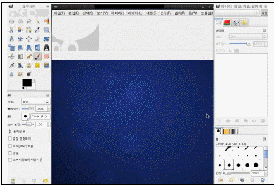
- ImageMagicK
- eog
- GIMP
- Totem
(정답률: 50%)
52. 다음 중 가장 저수준의 X 관련 클라이언트 라이브러리로 알맞은 것은?
- XCB
- GTK+
- Qt
- Xt
(정답률: 58%)
53. 다음 X 윈도 응용 프로그램 중 텍스트 파일을 생성할 때 사용하는 프로그램으로 틀린 것은?
- gvim
- kwrite
- gedit
- evince
(정답률: 50%)
54. 다음 중 X 윈도를 부팅 시에 실행하기 위해 설정하는 파일로 알맞은 것은?
- /etc/fstab
- /etc/x.org
- /etc/inittab
- /etc/initdefault
(정답률: 66%)
55. 다음 그림에 해당하는 프로그램으로 알맞은 것은?
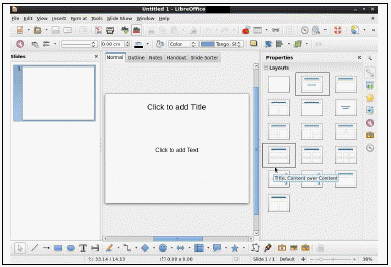
- LibreOffice Writer
- LibreOffice Impress
- LibreOffice Calc
- LibreOffice Draw
(정답률: 75%)
56. 다음 중 X 윈도 기반 이미지 뷰어 프로그램으로 틀린 것은?
- ImageMagick
- Juk
- gthumb
- eog
(정답률: 61%)
57. 다음 설명에 해당하는 내용으로 알맞은 것은?
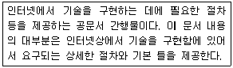
- RFC
- ISO
- CVE
- STD
(정답률: 49%)
58. 다음 설명에 해당하는 기관으로 알맞은 것은?
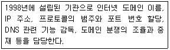
- IANA
- IETF
- ICANN
- ITU
(정답률: 55%)
59. 다음 설명에 해당하는 파일로 알맞은 것은?
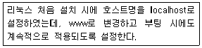
- /etc/sysconfig/network
- /etc/hosts
- /etc/host.conf
- /etc/resolv.conf
(정답률: 29%)
60. 다음 중 Xen 서버 가상화를 사용할 경우에 설정되는 네트워크 장치명으로 알맞은 것은?
- xbr0
- xe0
- xen0
- xenbr0
(정답률: 44%)
61. 다음 중 C 클래스 기준으로 서브넷마스크를 255.255.255.192로 설정했을 때 생성되는 서브네트워크의 개수로 알맞은 것은?
- 4
- 8
- 32
- 64
(정답률: 60%)
62. 다음 중 전자 우편과 가장 거리가 먼 프로토콜로 알맞은 것은?
- POP3
- IMAP
- SMTP
- SNMP
(정답률: 79%)
63. 다음 설명과 가장 관련 있는 인터넷 서비스로 알맞은 것은?
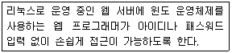
- 텔넷
- FTP
- 유즈넷
- 삼바
(정답률: 45%)
64. 다음 중 20, 21번 포트를 사용하고 2개의 모드가 존재하는 서비스로 알맞은 것은?
- SSH
- NFS
- FTP
- SAMBA
(정답률: 81%)
65. 다음은 ssh 서버에 다른 계정으로 접속하는 과정이다. ( 괄호 ) 안에 들어갈 내용으로 알맞은 것은?
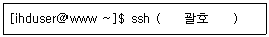
- -u kait 192.168.12.22
- -U kait 192.168.12.22
- -L kait 192.168.12.22
- kait@192.168.12.22
(정답률: 58%)
66. 다음 중 IPv4의 A 클래스에 할당된 사설 네트워크 대역으로 알맞은 것은?
- 10.0.0.0 ~ 10.16.255.255
- 10.16.0.0 ~ 10.31.255.255
- 10.31.0.0 ~ 10.255.255.255
- 10.0.0.0 ~ 10.255.255.255
(정답률: 57%)
67. 다음 중 OSI 7계층 모델을 기준으로 가장 상위계층과 연관된 프로토콜로 알맞은 것은?
- SSL
- TCP
- IP
- ICMP
(정답률: 64%)
68. 다음 중 LAN 및 MAN 관련 표준을 제정한 기관으로 알맞은 것은?
- ISO
- IEEE
- ANSI
- ITU
(정답률: 65%)
69. 다음 중 리눅스 네트워크 설정에 대한 설명으로 틀린 것은?
- 이더넷 카드, 모뎀, 시리얼/패러럴 케이블 기반의 네트워크 하드웨어를 지원한다.
- 대부분의 네트워크 프로토콜을 지원하는데, 관련 프로토콜은 직접 설치해야 한다.
- Xen, KVM, VirtualBox 등의 서버 가상화 관련 네트워크 장치도 지원한다.
- ISDN, AX.25, ATM 등의 네트워크도 지원한다.
(정답률: 59%)
70. 다음 중 로컬 네트워크에 있는 다른 시스템의 맥(MAC) 주소를 확인할 때 사용하는 명령으로 알맞은 것은?
- ip
- ss
- arp
- ifconfig
(정답률: 68%)
71. 다음 중 네트워크 카드에 물리적으로 케이블이 연결되었는지 여부를 확인할 수 있는 명령으로 알맞은 것은?
- netstat
- ss
- arp
- ethtool
(정답률: 65%)
72. 다음 중 삼바(Samba)와 가장 관련 있는 프로토콜로 알맞은 것은?
- SSH
- NFS
- FTP
- CIFS
(정답률: 65%)
73. 다음 중 웹키트 레이아웃 엔진을 이용해서 개발한 프리웨어 웹 브라우저로 알맞은 것은?
- 파이어폭스
- 크롬
- 갈레온
- 인터넷 익스플로어
(정답률: 58%)
74. 다음 중 OSI 7계층 모델에서 물리 계층의 데이터 전송 단위로 알맞은 것은?
- bit
- frame
- packet
- segment
(정답률: 75%)
75. 다음 중 OSI 7계층 모델을 상위 계층부터 나열한 순서로 알맞은 것은?
- 물리 → 데이터링크 → 네트워크 → 전송→ 세션 → 표현 → 응용
- 응용 → 표현 → 세션 → 전송 → 네트워크→ 데이터링크 → 물리
- 응용 → 세션 → 표현 → 전송 → 네트워크→ 데이터링크 → 물리
- 물리 → 데이터링크 → 네트워크 → 전송→ 표현 → 세션 → 응용
(정답률: 56%)
76. 다음 중 물리 계층 및 데이터링크 계층에서만 관련 기능을 수행하는 장치로 가장 알맞은 것은?
- 게이트웨이
- 라우터
- 리피터
- 브리지
(정답률: 51%)
77. 다음 설명에 해당하는 것으로 알맞은 것은?
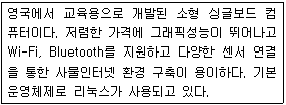
- Arduino
- MicroBit
- Pentium
- Raspberry Pi
(정답률: 68%)
78. 서버 가상화의 장점으로 틀린 것은?
- 효율적인 서버 자원의 이용이 가능하다.
- 소프트웨어 라이선스 비용이 없어 관리가 용이하다.
- 응급재해시서비스중단없는빠른복구가가능하다.
- 서버 트래픽 증가에 따른 유연한 대처가 가능하다.
(정답률: 57%)
79. 다음 중 고성능(HPC:High Performance Computing) 클러스터와 가장 관계가 없는 것은?
- GNU C Compiler
- PVM
- MPI
- HA
(정답률: 52%)
80. 임베디드 리눅스의 장점으로 알맞은 것은?
- 커널과 루트파일 시스템 등에 상대적으로 많은 메모리를 차지한다.
- 사용자 모드, 커널 모드 메모리 접근이 복잡하다.
- 소스코드가 공개되어 있어 변경과 재배포가 용이하다.
- 디바이스 드라이버 프레임워크가 복잡하다.
(정답률: 69%)
결과: -r--r--r-- 1 user user 0 Jun 9 00:00 lin.txt
이유: touch 명령은 새로운 파일을 생성하며, 기본적으로 생성된 파일의 허가권은 666 (rw-rw-rw-) 이다. 그러나 umask 값에 따라 파일 생성 시 기본 허가권에서 umask 값에 해당하는 비트를 빼서 설정된다. 이 경우 umask 값이 022 이므로, 기본 허가권에서 "w" 권한을 빼면 "-r--r--r--" 이 된다.